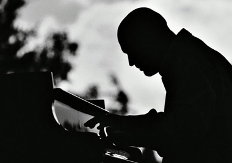

Mijn eerste Jazz-stapjes
woensdag 29 september 2004 | Muziek
Tussen alle Waits-geweld door — Real Gone is trouwens opnieuw een echte voltreffer — houdt mijn eeuwige zoektocht naar nieuwe muzikale energiebronnen natuurlijk niet op. Vorige week vrijdag bestelde ik mijn allereerste klassieke jazz-cd’s ooit: Solobsession van Bojan Zulfikarpasic (Bojan Z. voor de vrienden) en The Köln Concert van jazzlegende Keith Jarrett. Samen goed voor 120 minuten piano solo.
Natuurlijk kocht ik niet zomaar lukraak twee willekeurige jazzplaten. Van het één kwam het ander: donderdag hoorde ik het prachtige ‘Don’t buy ivory anymore‘ (
Audio clip: Adobe Flash Player (version 9 or above) is required to play this audio clip. Download the latest version here. You also need to have JavaScript enabled in your browser.
) uit Solobsession in de Tuin van Eden. Het nummer raakte me zo diep, dat ik de cd de dag erop maar meteen bestelde. Op de knappe site van Bojan Z. las ik later in een artikel uit The Gardian dat Solobsession zo goed was dat het de auteur deed denken aan één van de meest bejubelde piano-opnames allertijden (sic): The Köln Concert van Keith Jarrett. Tja… en als je dan toch net je VISA bij de hand hebt…
Gisterenavond vond ik mijn Amazon-bestelling al tussen de post. Vandaag heb ik Solobsession bijna onafgebroken afgespeeld tijdens het werk. In het begin was het enkel het nummer dat ik al kende van de radio dat me aansprak, maar tegen de vroege namiddag onthulden ook de andere zich op dezelfde magistrale wijze: in al hun schoonheid en kinderlijke eenvoud. Dit is een prachtige cd, die ongetwijfeld tot mijn favorieten gaat behoren. Misschien koop ik binnenkort ook wel Bojan’s nieuwste cd, die vandaag genomineerd werd voor de Klara muziekprijzen.
Pijnlijke vaststelling: eveneens op de site van Bojan Z. las ik dat the man himself België nog maar onlangs heeft bezocht voor een solo optreden in Brussel! Aarch! Wir haben es nicht gewüßst.
Anyway, morgen brengt Mr. Jarrett mij misschien wel troost. Muziek is heerlijk.

Erik op 29 september 2004
wel, het zijn dan misschien nog maar uw eerste jazz-cdees, maar ik kan je vertellen dat je van de eerste keer twee uiterst briljante parels in huis hebt gehaald
ongetwijfeld het begin van een lange ontdekkingstocht